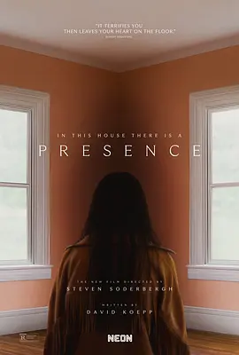

5.7
感应
Presence
2024
美国
评分 5.7
导演:
史蒂文·索德伯格
演员:
刘玉玲 / 克里斯·沙利文 / 卡莉娜·梁 / 艾迪·马代 / 韦斯特·穆赫兰
类型:
剧情,恐怖,惊悚
剧情简介
露丝与丈夫克里斯带着一双儿女搬入郊区的新家，本以为能借此重新整理家庭秩序，却在踏入门槛的那一刻起感到一丝异样。新房宽敞明亮，但光线在角落处总显得停滞，空气里像有看不见的重量，尤其围绕着十几岁的克洛伊。她刚经历好友离世，情绪敏感而封闭，而新家的沉默似乎正放大她的孤独，使她在空荡的楼梯口、斑驳的墙面前产生隐约的幻听与错觉。克洛伊与哥哥关系紧绷，连连冲突更让她在家中毫无归属感。她在深夜听到房间角落似有轻微移动声，或在楼下看见人影一闪而过，却总是来不及让别人察觉。露丝忙于维系家庭表面的平静，对女儿的异状察觉得太晚；而克里斯试图用理性解释一切，却也在某些时刻瞥见难以言说的画面，像是某个隐形存在正站在他们的生活边缘。索德伯格以冷感镜头捕捉空间的压迫与静默，让这栋房子逐渐从居所变成角色。门缝、镜面、楼道回声都像在呼吸，氛围在无声中变得紧绷。随着克洛伊的情绪不断被触动，幽微的存在开始跨越她的个人空间，影响整个家庭——灯光失控地闪动、家具错位、空气里出现压迫性的低频感，仿佛有某个意志正试图介入他们的日常。当一家人开始意识到这力量并非盲目攻击，而像是在传递某种记忆或警告，他们不得不重新回望自己的裂痕：未愈的悲伤、偏爱的伤害、以及那些被掩盖的情绪细节。影片在紧张的节奏与克制的惊悚之间游走，让恐惧不止来自超自然，也来自一个家庭面对真相的艰难。